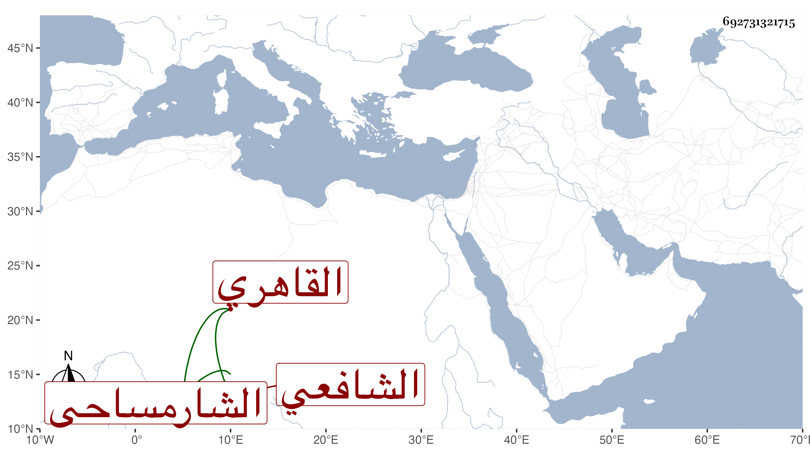

0902Sakhawi.DawLamic.ITO20230111-ara1.EIS1600.692731321715
Biography ID: 692731321715
571
محمد بن محمد بن محمد بن عبد الله بن محمد بن عبد الرحمن بن يوسف الشمس بن الأمين بن الشمس الشارمساحي ثم القاهري الشافعي ابن أخي الزين يوسف الكتبي الآتي . ممن قرأ على الأبناسي الضرير نزيل الزينية وحضر عندالبكري وتكسب بالشهادة وقتا ثم استنابه زكريا لأجل عمه في ذي الحجة سنة اثنتين وتسعين وسافر قاضي المحمل سنة خمس وتسعين .
